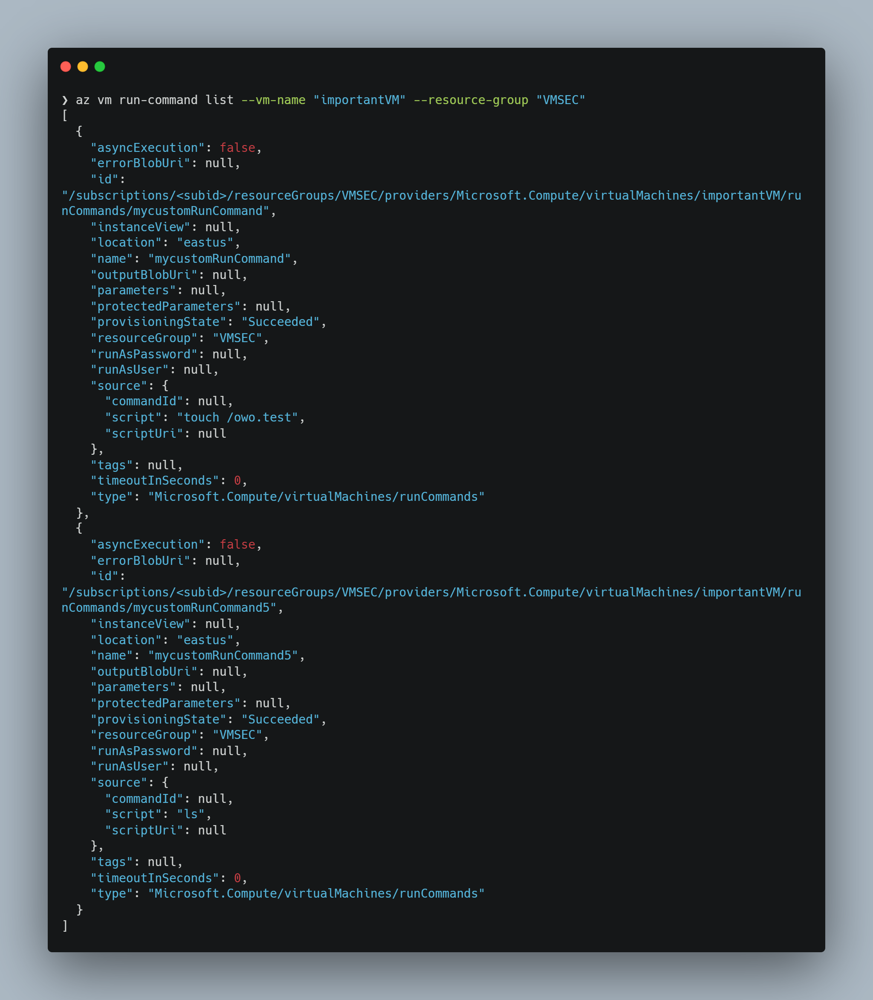

Introduction
This is the first of a series where I will be exploring the ways a threat actor can move from the Azure Management plane, into the operating system level of Azure Virtual Machines. This series will be dealing with the security properties (and attacks) that exist specifically because this is an Azure VM. The normal security measures at the OS and network level are obviously still relevant, but is not something I will detail here.
In this first part we will be looking at the Run Command.
Why is this relevant?
While the cloud is a lot more than just a place to run virtual machines on someone else's hardware, running av VM is a foundational use case og where most organizations will start as they move to the cloud.
As a part of that they may set up an network security architecture roughly like this example from Microsoft.
While doing this properly is important, there is one aspect of this that seem to confuse people not used to the cloud: Namely the management plane.
All of the resources in this diagram are Azure resources which can be managed via an API. This API is accessible via the internet and you have no network level controls to protect these APIs.
This introduces two important takeaways which seems to be not be well understood by many:
- Management traffic of your Azure Platform does not involve any network or IP addresses you control (although application og system specific management traffic may do so).
- Lateral movement in the cloud does not need to involve the network layer.
While you can use IP and device based Conditional Access rules to force management access down into a network you control, and attackers can do lateral movement at the network layer, none of these are a given.
Network security measures are critical for protecting workloads. But if I ask what you are doing to protect your Azure Management plane, and the answer is a network diagram, the complete lack of network controls for the management plane means that one is fundamentally missing the point.
If your idea of detecting lateral movement in a public cloud involves looking at network traffic, you are not wrong, but you are also going to be blind to a lot. While I have not found any comprehensive statistics of Azure attack methods(though I would love to), my impression based on available threat intel reports is that lateral movement in Azure is commonly done on the management/identity plane.
For this reason I will be going through some methods an attacker with the appropriate permissions in Azure can move from the management plane, down into the data plane of a virtual machine, and what can be done to defend against it.
All of these methods will allow an attacker to steal data or execute code on the machine. Most of these of these methods can not be detected at the network layer. Most can be detected via host level logging, and all can be logged and to some extent detected via Azure Activity Logs.
The Run Command
The most well known of these methods which is the focus of this part of the series is the Run Command. Which is well documented already:
https://www.mandiant.com/resources/blog/azure-run-command-dummies
https://stratus-red-team.cloud/attack-techniques/azure/azure.execution.vm-run-command/
https://hausec.com/2022/05/04/azure-virtual-machine-execution-techniques/
https://posts.specterops.io/automating-azure-abuse-research-part-1-30b0eca33418
The Run Command is a feature that lets you call the API to run a script on the VM as SYSTEM or Root.
This allows an attacker to do anything on the host. Stealing information, deploying beacons, stealing Accesstokens for the Managed Identity to do lateral movement.
Functionally there are two types of run commands. The default Custom Script Extension (now called Action Run Command), and the newer Managed Run Command https://learn.microsoft.com/en-us/azure/virtual-machines/linux/run-command-managed.
The newer Managed Run command has more advanced functionality such protected parameters and fetching scripts from a URI.
Artifacts
The Mandiant article about the run command details a lot of details about what happens at the OS level. Since then the newer Managed Run Command has been released, which has has different host artifacts.
Old Action Run Command
- Contains scripts at
/var/lib/waagent/run-command/download - Status/output of script at
/var/lib/waagent//Microsoft.CPlat.Core.RunCommandLinux-1.0.5/status - Full run logs
/var/log/azure/run-command/handler.log
Windows: C:\Packages\Plugins\Microsoft.CPlat.Core.RunCommandWindows\<version number>\Status\<job number>.status
New Managed Run Command
- Contains scripts at
/var/lib/waagent/run-command-handler/download - Status/output of script at
/var/lib/waagent/Microsoft.CPlat.Core.RunCommandHandlerLinux-1.3.2/status - Full run logs
/var/log/azure/run-command-handler/handler.log
Windows: C:\Packages\Plugins\Microsoft.CPlat.Core.RunCommandHandlerWindows\<version number>\Status\<job number>.status
As the Azure Activity Logs do not give any information about what was ran, these host artifacts are an important source of information, if there was no EDR or similar logging solution in place when the command was run.
Example of a status output log doing echo "rawrX3.
In the New Managed Run Command however, there is more information to collect.
Docs for the Managed Run Command: https://learn.microsoft.com/en-us/azure/virtual-machines/linux/run-command-managed
We can create a command via Az CLI
az vm run-command create --name "mycustomRunCommand5" --vm-name "importantVM" --resource-group "VMSEC" --script "whoami"
We can then list the created commands
az vm run-command list --vm-name "importantVM" --resource-group "VMSEC"

The show command shows output of last execution in the "output" field.
Changing the script to run the "date" command shows that it does not trigger an execution of the script when you create it again, and the az vm run-command invoke command seems to only be part of the old Run commands. I cannot find a way to run one of the Managed Run commands with it.
These changes are logged in the Azure Activity logs, but not what is changed. This means running
az vm run-command create --name "mycustomRunCommand5" --vm-name "importantVM" --resource-group "VMSEC" --script "whoami"
and then
az vm run-command create --name "mycustomRunCommand5" --vm-name "importantVM" --resource-group "VMSEC" --script "echo 'owo'"
Will only show the last "echo 'owo'" command, and not "whoami".
From a forensics point of view you can then tell the last command that was run and its output, and correlate with the Azure Activity Logs to see if other scripts were run.
Forensics Evasion via Secure Parameters
The documentation for Managed Run Command shows that you can now pass parameters in a secure manner https://learn.microsoft.com/en-us/azure/virtual-machines/linux/run-command-managed#create-or-update-run-command-on-a-vm-instance-using-parameter-and-protectedparameter-parameters-public-and-protected-parameters-to-script
One part caught my eye.
These nameless params on linux seems like an easy place to place other commands in way that should evade some logging.
Creating our secure params
$ProtectedParametersArray = @([Microsoft.Azure.PowerShell.Cmdlets.Compute.Models.Api20210701.IRunCommandInputParameter]@{name='';value=';touch /owo69'})
Creating command
Set-AzVMRunCommand -ResourceGroupName VMSEC -VMName importantVM -RunCommandName SecretCommand -SourceScript "hostname" -ProtectedParameter $ProtectedParametersArray -Location EastUs
I ended up doing this in the cloud shell as for some reason I could not create the parameters without error locally.
protectedParameters are shown as null, despite it very much being present.
Having run quite a few commands at this point there are a lot of file artifacts being dropped, but our secret command ran and created a file.
Looking at the logs from the Run commands shows no sign of any secret param
This means that the secret params can be used to run any command via Managed Run Commands without generating any logs.
Which is not great.
Azure Logs and KQL
WRITE is for creating the extensions.
This gives information about who created a new run command script, but not what it contains.
AzureActivity
| where OperationNameValue == "MICROSOFT.COMPUTE/VIRTUALMACHINES/RUNCOMMANDS/WRITE"
Actually running the extensions are MICROSOFT.COMPUTE/VIRTUALMACHINES/RUNCOMMAND/ACTION
This will show that A Run command was run, but not which one.
AzureActivity
| where OperationNameValue == "MICROSOFT.COMPUTE/VIRTUALMACHINES/RUNCOMMAND/ACTION"
While doing this testing I found out that this did not seem to be case.
Creating a Managed Run Command also runs it, but this does not seem to show up in the logs as MICROSOFT.COMPUTE/VIRTUALMACHINES/RUNCOMMAND/ACTION OperationNameValue, only WRITE.
I created a role with the notAction for MICROSOFT.COMPUTE/VIRTUALMACHINES/RUNCOMMAND/ACTION and only the MICROSOFT.COMPUTE/VIRTUALMACHINES/RUNCOMMANDS/WRITE permission from MICROSOFT.COMPUTE/VIRTUALMACHINES/RUNCOMMANDS
In theory, a user with only this role should only be able to write an Run Command, and not actually run it. Turns out, no.
I reported this MSRC and they have now documented this behaviour https://learn.microsoft.com/en-us/azure/virtual-machines/linux/run-command-managed#limiting-access-to-run-command.
This means that any detection rules based on detecting use of the ACTION will not detect use of the Managed Run Command.
Defense
While the Run command is a useful feature it also has a very significant abuse potential for any compromised accounts with the right permissions. Unfortunately the feature itself cannot be turned off, so it must be dealt with by managing permissions.
The first step is least privilege. Are you using this feature for admin work? Does everyone with permissions to use the Run Command need them?
If you are not using this feature, create custom roles to administer VMs that do not contain these permissions.
Generally your VM admins should use the Virtual Machine Contributor role rather than Owner or Contributor roles. However, beware the documentation. If you look at this definition of the Virtual Machine Contributor, do you think that this role would be able to run commands on the VM?
Logging in to the portal with Virtual Machine Contributor role on a machine. What about now?
You would probably think no, but you would be wrong.
It has the Microsoft.Compute/virtualMachines/* permissions, without associated notActions, and as such it can run commands.
In terms of Azure Security, be wary of what the Azure Portal says you cannot do, as it will lie to you. The API or Powershell is generally a better source of truth.
The docs do a better job at explaining what this role can actually do. https://learn.microsoft.com/en-us/azure/role-based-access-control/built-in-roles#virtual-machine-contributor
Creating a managed Run Command from an account with only the Virtual Machine Contributor role.

And our file shows up

To avoid this, we create a custom VM admin contributor role with notActions for the run command.
You can get this from my github.
This is a clone of the Virtual Machine Contributor role, with the only changes being the notActions for the run command permissions. It is scoped be deployed at the subscription level.
So now you have a role that can be used to do admin work, next step is enforcing that the normal Virtual Machine Contributor role is not used.
Enter Azure Policy.
Microsoft has a boilerplate that be quickly modified to prevent using the role.
Customizing to deny the Virtual Machine Contributor assignment.
{
"mode": "All",
"policyRule": {
"if": {
"allOf": [
{
"field": "type",
"equals": "Microsoft.Authorization/roleAssignments"
},
{
"field": "Microsoft.Authorization/roleAssignments/roleDefinitionId",
"equals": "/providers/Microsoft.Authorization/roleDefinitions/9980e02c-c2be-4d73-94e8-173b1dc7cf3c"
}
]
},
"then": {
"effect": "deny"
}
},
"parameters": {}
}
Paste this into the a new policy definition in the portal and deploy.
This will deny any attempts to assign the Virtual Machine Contributor role.
End
This is the first part of a planned series so stay tuned!